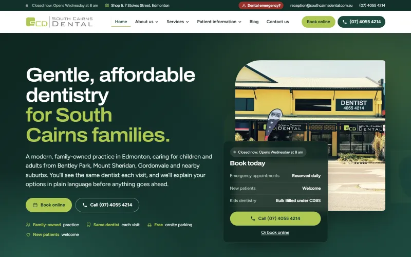
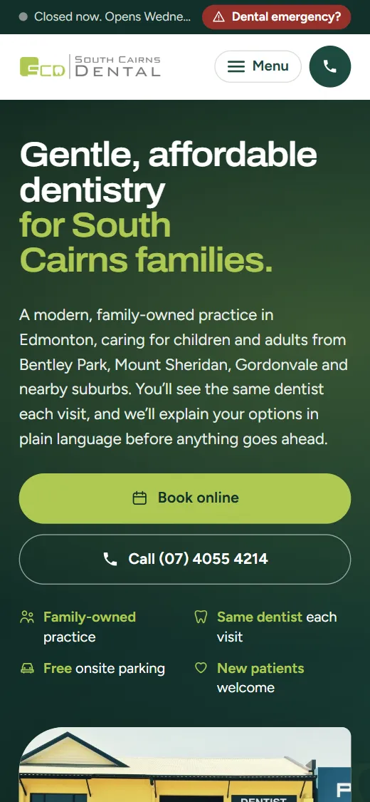

South Cairns Dental
A WordPress website development project for South Cairns Dental, focused on presenting the dental practice, its services, team information, and patient resources through a professional and accessible website experience.
- Role
- WordPress Developer
- Stack
- WordPressElementorThinkRankPHPHTMLCSSJavaScript
What I did
- Custom WordPress theme converted from the practice's static website
- Every page built in Elementor from custom theme widgets, so text, images and buttons can be edited visually
- Practice details, opening hours and booking links managed from one place in the Customizer
- SEO titles and descriptions set up through ThinkRank
- Redirects from the previous site's addresses to the new pages